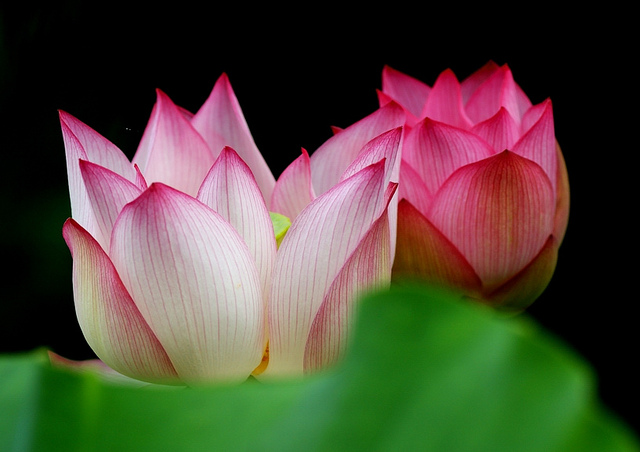
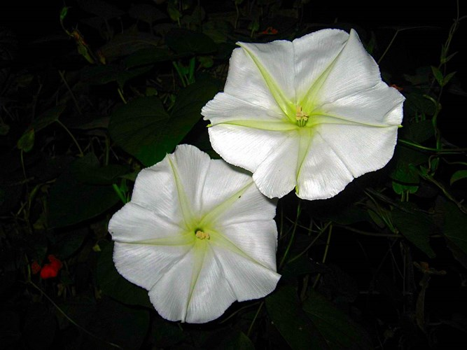
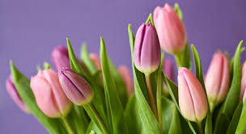
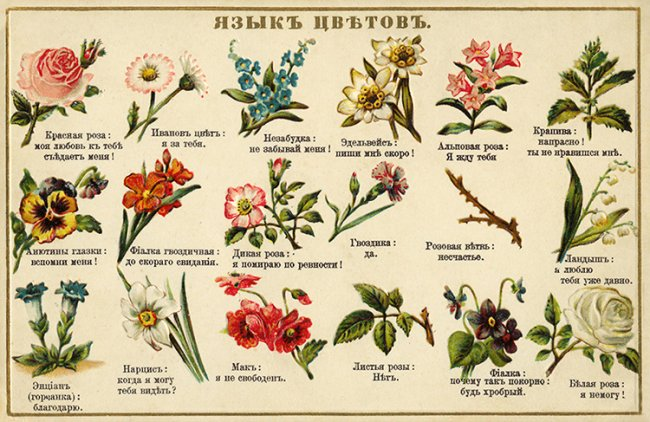
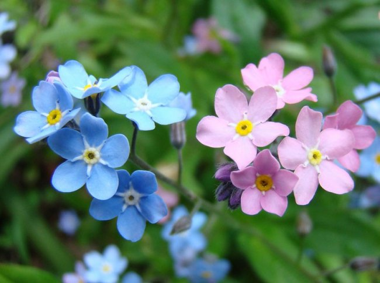

Flowers
Разнообразие видов цветов
Самый древний цветок
 Лотос - один из самых древних цветов на земле — существовали они уже в меловом периоде, больше 100 млн. лет назад.
Их ископаемые останки находят и в Северной Америке, и на Дальнем Востоке, и даже в Арктике.
В наше время насчитывают, строго говоря, всего два вида чистокровных лотосов.
Самый древний цветок, «мать всех цветов», был обнаружен археологами в 2002 г. на территории современного Китая.
Его возраст более 125 000 000 лет.
Лотос - один из самых древних цветов на земле — существовали они уже в меловом периоде, больше 100 млн. лет назад.
Их ископаемые останки находят и в Северной Америке, и на Дальнем Востоке, и даже в Арктике.
В наше время насчитывают, строго говоря, всего два вида чистокровных лотосов.
Самый древний цветок, «мать всех цветов», был обнаружен археологами в 2002 г. на территории современного Китая.
Его возраст более 125 000 000 лет.
Воскрешающий лотос

В Древнем Египте лотос считали священным цветком, символом воскрешения.
Ему поклонялись и применяли в погребальных обрядах.
Это во многом обусловлено способностью лотоса выживать во время многолетней засухи и начинать цвести лишь почва снова станет влажной.
Солнцелюбивые подсолнухи
 Очаровательные и яркие подсолнухи полностью оправдывают своё название.
У них есть удивительная способность поворачивать соцветие вслед за движением солнца.
Букет из этих чудесных цветов – проверенное средство добавить красок в серые будни.
Подсолнечник - одно из самых крупных растений среди сложноцветных и, пожалуй,
самое любимое. Нет таких огородов в сельской местности, где бы среди прочих
растений не красовался этот гигант. Несмотря на свою величину, это - однолетнее
растение. От мочковатого корня отходит стебель, который может достигать в высоту
3 м. Листья сердцевидно-треугольные, заостренные, грубоопушенные, черешковые,
расположены на стебле поочередно. Мощный стебель с полой сердцевиной венчает
гигантское соцветие-корзинка диаметром от 10 до 35 см. Снизу соцветие окружено
оберткой из зеленых черепицеобразно расположенных листочков. Цветки центральной
части корзинки мелкие, а ярко-желтые язычковые значительно длиннее. К началу
цветения корзинки поникают. Цветет с июля до сентября. Подсолнечник выращивают в
садах и на полях. Культивируемых сортов много, они отличаются друг от друга
размерами корзинок и содержанием масла в семенах. Отдельные экземпляры иногда
"убегают" на свободу, и тогда на железнодорожных насыпях, компостных кучах и по
пустырям появляются одичавшие подсолнухи. Но их собирать не следует. В лечебных
целях используют цветки только культурных растений. Масло из семян нельзя отжать
самостоятельно, его получают на заводах. Выращивается как культурное растение на
полях и огородах. распространен по всей Украине, в Крыму, в средней и южной
полосе России, в Беларуси, Молдове, на Кавказе, в Средней Азии. Сейчас
подсолнечник занимает среди масличных культур наибольшую площадь, кроме того, он
используется как пищевое и кормовое растение, из стеблей получают волокнистые
плиты. Подсолнечное масло в настоящее время является общепринятым растительным
пищевым жиром.
Очаровательные и яркие подсолнухи полностью оправдывают своё название.
У них есть удивительная способность поворачивать соцветие вслед за движением солнца.
Букет из этих чудесных цветов – проверенное средство добавить красок в серые будни.
Подсолнечник - одно из самых крупных растений среди сложноцветных и, пожалуй,
самое любимое. Нет таких огородов в сельской местности, где бы среди прочих
растений не красовался этот гигант. Несмотря на свою величину, это - однолетнее
растение. От мочковатого корня отходит стебель, который может достигать в высоту
3 м. Листья сердцевидно-треугольные, заостренные, грубоопушенные, черешковые,
расположены на стебле поочередно. Мощный стебель с полой сердцевиной венчает
гигантское соцветие-корзинка диаметром от 10 до 35 см. Снизу соцветие окружено
оберткой из зеленых черепицеобразно расположенных листочков. Цветки центральной
части корзинки мелкие, а ярко-желтые язычковые значительно длиннее. К началу
цветения корзинки поникают. Цветет с июля до сентября. Подсолнечник выращивают в
садах и на полях. Культивируемых сортов много, они отличаются друг от друга
размерами корзинок и содержанием масла в семенах. Отдельные экземпляры иногда
"убегают" на свободу, и тогда на железнодорожных насыпях, компостных кучах и по
пустырям появляются одичавшие подсолнухи. Но их собирать не следует. В лечебных
целях используют цветки только культурных растений. Масло из семян нельзя отжать
самостоятельно, его получают на заводах. Выращивается как культурное растение на
полях и огородах. распространен по всей Украине, в Крыму, в средней и южной
полосе России, в Беларуси, Молдове, на Кавказе, в Средней Азии. Сейчас
подсолнечник занимает среди масличных культур наибольшую площадь, кроме того, он
используется как пищевое и кормовое растение, из стеблей получают волокнистые
плиты. Подсолнечное масло в настоящее время является общепринятым растительным
пищевым жиром.
Луноцвет

Как известно, растениям для цветения необходимы солнечные лучи.
Уникальность уроженца американских тропиков калониктиона или лунного цветка состоит в том, что для того, чтобы его цветы распустились, нужен свет луны, а не солнца – это растение цветёт исключительно в тёмное время суток. Появление красивых белых цветков с наступлением ночи – зрелище волшебное и чарующее. Но, как только наступает восход, цветы увядают.
Особенностью такой садовой лианы является распускание белых цветов с наступлением ночи – зрелище необычное и завораживающее, сопровождающееся шуршащим шелестом.
Затем раздается тихий хлопок - и прекрасный цветок лунный в один момент раскрывается. Ночное пространство тут же наполняется неимоверным ароматом: сладковато-миндальным, с ноткой свежести и романтики. С восходом солнца цветы увядают, открытыми в течение всего дня могут оставаться только при пасмурной погоде.
Стоимость тюльпанов

Тюльпаны – это наиболее продаваемые цветы на нашей планете.
На их родине – Голландии – каждый год выращивают более 3 000 000 000 000 этих растений.
Но, кроме того, в Россию осуществляются поставки цветов из Эквадора, Колумбии, большинства европейских стран.
А одним из лучших поставщиков тюльпанов в Россию является Голландская компания Jaaz Flowers & Plants B.V., между прочим, на официальном сайте компании вы можете купить цветы оптом по конкурентным ценам с доставкой в любой регион России, Белоруссии, Казахстана и других стран. Кстати, пик цены на тюльпаны пришёлся на XVII век. В те времена луковицы тюльпанов стоили дороже золота. Стоимость отдельных сортов могла доходить до 2 тысяч долларов. Сейчас тюльпаны имеют более доступную цену. Другой забавный факт об этих цветах – оказывается, их лепестки являются неплохой альтернативой луку в некоторых рецептах. Тюльпаны – одни из первых цветов, которые появляются весной на рынке. Это своеобразный символ этого времени года.
Интересные факты о цветах
Язык цветов

"Язык цветов" -- каждому из нас с детства знакомо это выражение.
Казалось бы, мы навсегда запомнили, что "желтые тюльпаны o вестники разлуки", а "красная роза"-- эмблема любви, но это лишь незначительная частичка целого мира, вмещающего в себя многовековую историю народов и цивилизаций, где цветам и их символике уделялось самое пристальное внимание. Бывают ситуации, когда для выражения своих сокровенных чувств, слов становится недостаточно. Облекая свою душу в слова, мы порой не можем сказать и половины того, что скрыто внутри. И тогда на помощь приходят цветы. Это трепетный и "живой" инструмент, познав язык которого, вы получите прекрасная возможность сделать свою жизнь не только полнее и ярче, но также стать более открытым и искренним по отношению к своим любимым, друзьям и близким. Как очаровать девушку на первом свидании, каким букетов порадовать родителей в честь юбилея и как ненавязчиво заслужить расположение шефа.
Необычное происхождение Незабудки

Оказывается, чтой маленький цветочек – незабудка носит одинаковое по смыслу названи больше винстве языков мира. Так например, forget-me-not в анг милылийском, Vergissmeinnicht в немецком. И несмотря на одинаковое название, в разных странах существует своя легенда происхождения цветка. Одна из легенд рассказывает о том, что Бог дал имена всем растениям кроме маленького цветка, и тот сказал: «Не забудь меня!». «Это и будет твоим именем», — ответил Бог.
Интересно, что у всех христианских народов этот цветок носит одинаковое по смыслу название. Предполагают, что истоком этого может быть древнегреческий миф о богине цветов Флоре, которая одаривала все растения именами, а про крошечную голубую незабудку позабыла. Зато потом вместе с парадоксальным названием она наградила обиженный цветок еще и чудесной силой: возвращать память тем людям, которые забывают своих близких или свою родину. Похоже объясняет происхождение незабудки и христианская легенда. Когда Господь однажды сотворил цветы, он дал каждому из них свое название и приказал хорошенько его запомнить. Но не успел Господь это сказать, как вернулся один из маленьких цветочков и со слезами на глазах воскликнул: «Господи, я забыл свое имя». Тогда, взглянув на него, Господь ласково сказал: «Не забудь меня!».